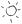
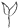
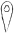
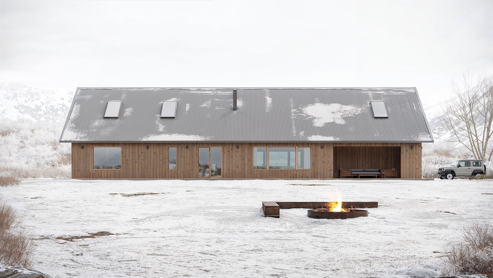
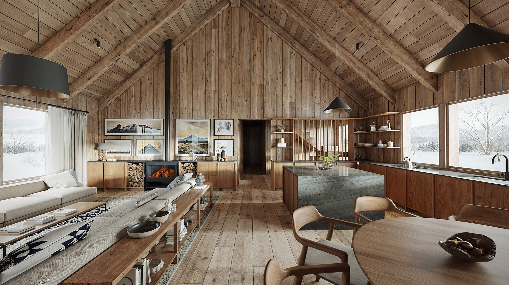
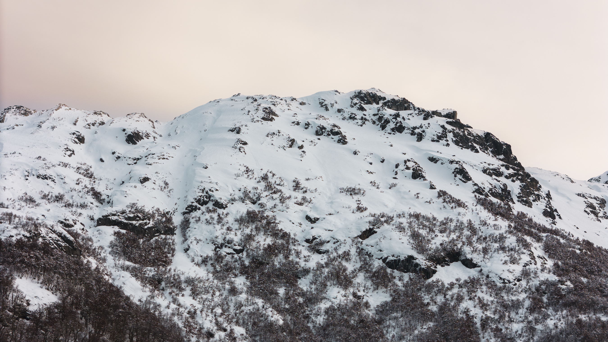
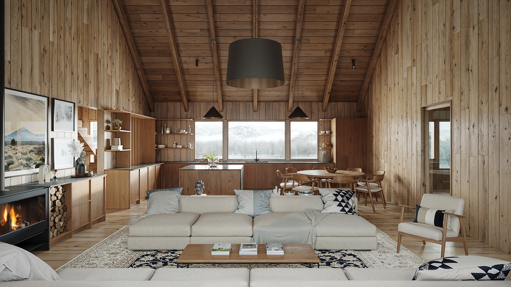
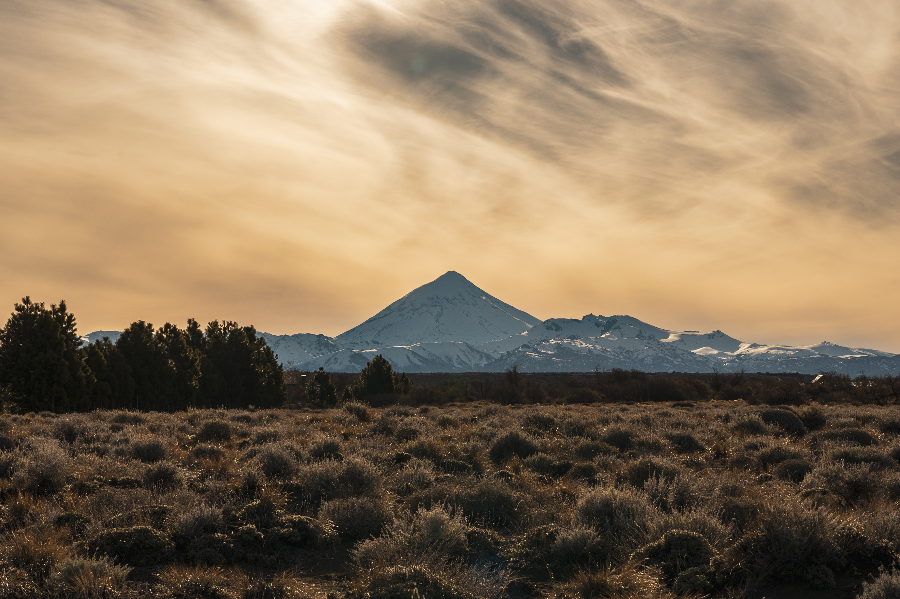

Cabaña Praderas
Casa de montaña en el extremo sur de Sudamérica

CLIMA /
Patagónico

BIOMA /
Bosque andino
TERRENO /
3.000 m²
ÁREA CUBIERTA /
220 m²

UBICACIÓN /
Cerro Perito
Moreno,
Río Negro, Argentina


El desarrollo de esta vivienda surge de la dualidad compleja del paisaje andino-patagónico, donde conviven dos realidades: la ladera de montaña, expuesta y ventosa, junto a la densidad de los bosques húmedos de coihue, lenga y ñire.
La arquitectura evita intervenir en la flora nativa, de gran valor ecológico. Para preservar el bosque, la implantación se resuelve en un área abierta sin vegetación. El sitio, expuesto a un clima dinámico y hostil, demanda un diseño adaptado al viento, las bajas temperaturas, las lluvias y las nevadas.



Tanto aventureros, deportistas y exploradores como quienes buscan la calma del paisaje patagónico encuentran en Praderas la calidez del hogar.
Una serie de estrategias de respuesta climática permiten generar un microclima interior de condiciones agradables, controladas y estables. Cuidadosamente orientada, térmicamente eficiente y correctamente aislada, la cabaña funciona como un refugio con todas las características que hacen de ella un cálido hogar surgido del clima crudo y riguroso.

La paleta de materiales de la envolvente se inspira en las texturas y los colores de la montaña nevada:
las piedras,
los troncos plateados y la vegetación de altura.
Discreta hacia el exterior,
su arquitectura revela
un interior rico en
detalles que aportan calidez
y contención frente a la inmensidad del paisaje.